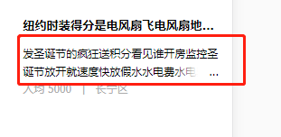
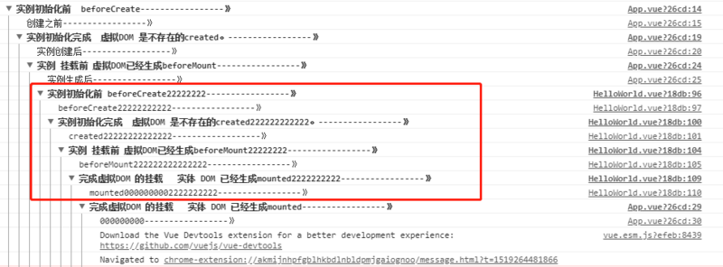

1、 viewport
<meta name="viewport" content="width=device-width,initial-scale=1.0,minimum-scale=1.0,maximum-scale=1.0,user-scalable=no" />
- widthProgramming Technology
- device-width: Set the viewport width, which can be a positive integer or the string device-width
- height: Device width
- initial-scale: Set the viewport height. Generally, once the width is set, the height is automatically parsed, so it does not need to be set
- minimum-scale: Default zoom ratio (initial zoom ratio), a number that can have decimals
- maximum-scale: Minimum zoom ratio allowed for the user, a number that can have decimals
- user-scalable: Maximum zoom ratio allowed for the user, a number that can have decimals
: Whether manual zooming is allowed
Extended question: How to deal with the problem of 1px being rendered as 2px on mobile?
1. Local handling
In the viewport property of the meta tag, set initial-scale to 1
Use rem according to the design mockup standard, and additionally use transform's scale(0.5) to shrink it by half
2. Global handling
In the viewport property of the meta tag, set initial-scale to 0.5
2. Several Ways to Handle Cross-domain
2. Several Ways to Handle Cross-domain
First, let's understand the browser's same-origin policy
The Same Origin Policy/SOP (Same origin policy) is a convention introduced to browsers by Netscape in 1995. It is the most core and basic security function of the browser. If the same-origin policy is missing, the browser is vulnerable to attacks such as XSS and CSRF. The so-called same origin means that "protocol + domain + port" are all the same. Even if two different domains point to the same IP address, they are not same-origin.
So how do we solve the cross-domain problem?
<script>
var script = document.createElement('script');
script.type = 'text/javascript';
// 传参并指定回调执行函数为onBack
script.src = 'http://www.....:8080/login?user=admin&callback=onBack';
document.head.appendChild(script);
// 回调执行函数
function onBack(res) {
alert(JSON.stringify(res));
}
</script>
1. Cross-domain via JSONP, native implementation:
2. Cross-domain via document.domain + iframe
This solution is limited to cross-domain scenarios where the primary domain is the same but the subdomains are different.
<iframe id="iframe" src="http://child.domain.com/b.html"></iframe> <script> document.domain = 'domain.com'; var user = 'admin'; </script>
1.) Parent window: (http://www.domain.com/a.html)
<script>
document.domain = 'domain.com';
// 获取父窗口中变量
alert('get js data from parent ---> ' + window.parent.user);
</script>
2.) Child window: (http://child.domain.com/b.html)
Disadvantage: Please see the rendering and loading optimization below.
3. Cross-domain via nginx proxy
4. Cross-domain via Node.js middleware proxy
3. Rendering Optimization
3. Rendering Optimization
- 1. Avoid using iframe (it blocks the onload event of the parent document)
- iframe blocks the onload event of the main page;
- Search engine crawlers cannot interpret such pages, which is not good for SEO;
iframe and the main page share the connection pool, and browsers have limits on connections to the same domain, so this affects the parallel loading of the page.
You need to consider these two disadvantages before using iframe. If you need to use iframe, it is best to dynamically add the src attribute value to the iframe via JavaScript, which can bypass the above two problems.
2. Avoid using GIF images for loading effects (to reduce CPU consumption and improve rendering performance);
3. Use CSS3 code instead of JS animations (avoid repaint and reflow as much as possible);
4. For some small icons, base64 encoding can be used to reduce network requests. However, it is not recommended for large images because it consumes a lot of CPU;
- The advantages of small icons are:
- 1. Reduce HTTP requests;
- 2. Avoid cross-domain file requests;
3. Modifications take effect immediately;5. The page head's `<style>` tag
will block the page; (because in the Renderer process, the JS thread and the rendering thread are mutually exclusive);
will block the page; (because in the Renderer process, the JS thread and the rendering thread are mutually exclusive);
7. Empty href and src in the page will block the loading of other page resources (block the download process);
8. Web Gzip, CDN hosting, data caching, image servers;
9. Front-end templating JS + data, reducing bandwidth waste caused by HTML tags. The front end uses variables to save AJAX request results, and operates on local variables every time without making requests, reducing the number of requests.
10. Use innerHTML instead of DOM operations, reducing the number of DOM operations and optimizing JavaScript performance.
11. When there are many styles to set, use className instead of directly manipulating style.
12. Use fewer global variables and cache the results of DOM node lookups. Reduce IO read operations.
13. Avoid using CSS Expression (css expression), also known as Dynamic properties (dynamic properties).
14. Preload images, put style sheets at the top, put scripts at the bottom, and add a timestamp.
15. Avoid using table in the main layout of a page. A table will only be displayed after its content is completely downloaded, and it displays slower than a div + CSS layout.
4. Stages of Events
1：捕获阶段 ---> 2：目标阶段 ---> 3：冒泡阶段 document ---> target目标 ----> document
Thus, the difference between setting the third parameter of addEventListener to true and false is already very clear:
- true means the element responds to the event during the "capture phase" (when it is transmitted from outside to inside);
- false means the element responds to the event during the "bubble phase" (when it is transmitted from inside to outside).
5、let var const
-
let: Allows you to declare variables, statements, or expressions whose scope is limited to block level. let bindings are not subject to variable hoisting, meaning that let declarations are not hoisted to the current scope, and the variable is in a "temporal dead zone" from the start of the block until initialization is processed.
-
var: The scope of a var-declared variable is limited to the context of its declaration position, rather than the variable always being global. Since variable declarations (and other declarations) are always processed before any code execution, declaring a variable anywhere in the code is always equivalent to declaring it at the beginning of the code.
-
const declares a read-only reference to a value (i.e., a pointer). Here we need to introduce the common JS types: String, Number, Boolean, Array, Object, Null, Undefined. Among them, the primitive types are Undefined, Null, Boolean, Number, String, which are stored in the stack; the composite types are Array and Object, which are stored in the heap. When the value of a primitive data type changes, its corresponding pointer also changes. Therefore, when const is used to declare a primitive data type and its value is changed later, an error will be reported. For example, `const a = 3; a = 5` will cause an error. However, for a composite type, if you only change one of the Value items of the composite type, it will still work normally.
6. Arrow Functions
The syntax is shorter than that of function expressions, and it does not bind its own this, arguments, super, or new.target. These function expressions are best suited for non-method functions, and they cannot be used as constructors.
7. Quickly Shuffle an Array
var arr = [1,2,3,4,5,6,7,8,9,10];
arr.sort(function(){
return Math.random() - 0.5;
})
console.log(arr);
Explanation here: (I am not good at organizing language, so please don't mock me)

First, when the return value is:
- less than 0, then a will be placed before b.
- If it equals 0, the relative position of a and b remains unchanged;
- If it is greater than 0, b will be arranged before a;
Here you will find that the array is initially in ascending order. Each time a sorting pass is performed, a random number is generated first (note that each "sorting pass" here refers to each red box as one pass, with 9 passes in total, and a single pass may involve multiple comparisons);
When the random number of a pass is greater than 0.5, a second comparison will be performed. If the second random number is still greater than 0.5, another comparison will be performed, until the random number is greater than 0.5 or it reaches the first position;
When the random number of a pass is less than 0.5, the indices of the two items currently being compared will not change, and the next pass continues;
8. Font Family (font-family)
@ 宋体 SimSun
@ 黑体 SimHei
@ 微软雅黑 Microsoft Yahei
@ 微软正黑体 Microsoft JhengHei
@ 新宋体 NSimSun
@ 新细明体 MingLiU
@ 细明体 MingLiU
@ 标楷体 DFKai-SB
@ 仿宋 FangSong
@ 楷体 KaiTi
@ 仿宋_GB2312 FangSong_GB2312
@ 楷体_GB2312 KaiTi_GB2312
@
@ 说明：中文字体多数使用宋体、雅黑，英文用Helvetica
body { font-family: Microsoft Yahei,SimSun,Helvetica; }
9. Meta Tags That May Be Used
<!-- 设置缩放 --> <meta name="viewport" content="width=device-width, initial-scale=1, user-scalable=no, minimal-ui" /> <!-- 可隐藏地址栏，仅针对IOS的Safari（注：IOS7.0版本以后，safari上已看不到效果） --> <meta name="apple-mobile-web-app-capable" content="yes" /> <!-- 仅针对IOS的Safari顶端状态条的样式（可选default/black/black-translucent ） --> <meta name="apple-mobile-web-app-status-bar-style" content="black" /> <!-- IOS中禁用将数字识别为电话号码/忽略Android平台中对邮箱地址的识别 --> <meta name="format-detection"content="telephone=no, email=no" />
Other meta tags
<!-- 启用360浏览器的极速模式(webkit) --> <meta name="renderer" content="webkit"> <!-- 避免IE使用兼容模式 --> <meta http-equiv="X-UA-Compatible" content="IE=edge"> <!-- 针对手持设备优化，主要是针对一些老的不识别viewport的浏览器，比如黑莓 --> <meta name="HandheldFriendly" content="true"> <!-- 微软的老式浏览器 --> <meta name="MobileOptimized" content="320"> <!-- uc强制竖屏 --> <meta name="screen-orientation" content="portrait"> <!-- QQ强制竖屏 --> <meta name="x5-orientation" content="portrait"> <!-- UC强制全屏 --> <meta name="full-screen" content="yes"> <!-- QQ强制全屏 --> <meta name="x5-fullscreen" content="true"> <!-- UC应用模式 --> <meta name="browsermode" content="application"> <!-- QQ应用模式 --> <meta name="x5-page-mode" content="app"> <!-- windows phone 点击无高光 --> <meta name="msapplication-tap-highlight" content="no">
10. Eliminating Transition Flicker
.css {
-webkit-transform-style: preserve-3d;
-webkit-backface-visibility: hidden;
-webkit-perspective: 1000;
}
Transition animations (without hardware acceleration enabled) may experience jitter. The above solution is only one way to enable hardware acceleration by changing the view perspective; another way to enable hardware acceleration:
.css {
-webkit-transform: translate3d(0,0,0);
-moz-transform: translate3d(0,0,0);
-ms-transform: translate3d(0,0,0);
transform: translate3d(0,0,0);
}
Enable hardware acceleration
Most common methods: translate3d, translateZ, transform
opacity property/transition animation (the compositing layer is only created during the animation; if the animation hasn't started or has ended, the element returns to its previous state)
will-change property (this is relatively obscure), generally used together with opacity and translate (and after testing, except for the above properties that can trigger hardware acceleration, other properties will not become composited layers).
Disadvantages: Hardware acceleration can cause excessive CPU usage and increased battery consumption; therefore, try to avoid overusing hardware acceleration.
11、android 4.x bug
- 1. The built-in browser on Samsung Galaxy S4 does not support the border-radius shorthand
- 2. When setting border-radius and background color at the same time, the background color will overflow outside the rounded corners
- 3. On some phones (such as Samsung), a links support the mouse :visited event, meaning the text turns purple after the link is visited
- 4. Android cannot play multiple audio elements simultaneously
- 5. On OPPO devices, border-radius may become invalid
12、JS 判断设备来源
// 判断移动端设备
function deviceType(){
var ua = navigator.userAgent;
var agent = ["Android", "iPhone", "SymbianOS", "Windows Phone", "iPad", "iPod"];
for(var i=0; i<len,len = agent.length; i++){
if(ua.indexOf(agent[i])>0){
break;
}
}
}
deviceType();
window.addEventListener('resize', function(){
deviceType();
})
// 判断微信浏览器
function isWeixin(){
var ua = navigator.userAgent.toLowerCase();
if(ua.match(/MicroMessenger/i)=='micromessenger'){
return true;
}else{
return false;
}
}
12. Using JS to Determine the Device Source
Reason:Because major browsers have optimized to save data traffic, they do not allow autoplay when the user has not performed any action (interaction);
//音频，写法一
<audio src="music/bg.mp3.html" autoplay loop controls>你的浏览器还不支持哦</audio>
//音频，写法二
<audio controls="controls">
<source src="music/bg.ogg.html" type="audio/ogg"></source>
<source src="music/bg.mp3.html" type="audio/mpeg"></source>
优先播放音乐bg.ogg，不支持在播放bg.mp3
</audio>
//JS绑定自动播放（操作window时，播放音乐）
$(window).one('touchstart', function(){
music.play();
})
//微信下兼容处理
document.addEventListener("WeixinJSBridgeReady", function () {
music.play();
}, false);
//小结
//1.audio元素的autoplay属性在IOS及Android上无法使用，在PC端正常；
//2.audio元素没有设置controls时，在IOS及Android会占据空间大小，而在PC端Chrome是不会占据任何空间；
//3.注意不要遗漏微信的兼容处理需要引用微信JS；
13. Audio and video elements cannot autoplay in iOS and Android
Let's go straight to the effect: compared to handling multi-line text overflow, single-line is much simpler and easier to understand.

Implementation method:
overflow: hidden; text-overflow:ellipsis; white-space: nowrap;
Of course, you also need to add the width property to be compatible with some browsers.
14. CSS Implementation for Single-line Text Overflow Displaying Ellipsis
Effect:

Implementation method:
display: -webkit-box; -webkit-box-orient: vertical; -webkit-line-clamp: 3; overflow: hidden;
Applicable scope:
Because it uses WebKit's CSS extension properties, this method is applicable to WebKit browsers and mobile devices;
Note:
1. -webkit-line-clamp is used to limit the number of lines of text displayed in a block element. To achieve this effect, it needs to be combined with other WebKit properties. Common combined properties:
2. display: -webkit-box; a required combined property that displays the object as a flexible box model.
3. -webkit-box-orient; a required combined property that sets or retrieves the arrangement of child elements of the flexible box object.
If you think this is still not beautiful enough, then continue looking at the effect below:

Is this what you want?
Implementation method:
div {
position: relative;
line-height: 20px;
max-height: 40px;
overflow: hidden;
}
div:after {
content: "..."; position: absolute; bottom: 0; right: 0; padding-left: 40px;
background: -webkit-linear-gradient(left, transparent, #fff 55%);
background: -o-linear-gradient(right, transparent, #fff 55%);
background: -moz-linear-gradient(right, transparent, #fff 55%);
background: linear-gradient(to right, transparent, #fff 55%);
}
Don't be too quick to rejoice. This method has a drawback: the ellipsis will also appear when the text does not exceed the line. Isn't that ugly? There's no way around it, so we have to combine it with JS to optimize this method.
Note:
- 1. Set height to an integer multiple of line-height to prevent overflowing text from showing.
- 2. Adding a gradient background to p::after can prevent text from being only half displayed.
- 3. Since IE6-7 does not display content, you need to add a tag to be compatible with IE6-7 (such as:…); to be compatible with IE8, replace ::after with :after.
15. Implementing Multi-line Text Overflow Displaying Ellipsis
Everyone should be familiar with this. Sometimes, you know, to quickly search for answers, it absolutely doesn't let you copy:
-webkit-user-select: none; -ms-user-select: none; -moz-user-select: none; -khtml-user-select: none; user-select: none;
16. Make Text and Images Non-copyable
This question seems to be a must-ask in interviews! I always ask it, haha! Actually, it doesn't matter how many implementation approaches there are, as long as you can achieve it!
Provide 4 methods:
-
1. Positioning: the box width and height are known; position: absolute; left: 50%; top: 50%; margin-left: -half of its own width; margin-top: -half of its own height;
-
2. table-cell layout: parent display: table-cell; vertical-align: middle; child margin: 0 auto;
-
3. Positioning + transform; suitable when the child box width and height are not fixed; (this is my commonly used method)
position: relative / absolute; /*top和left偏移各为50%*/ top: 50%; left: 50%; /*translate(-50%,-50%) 偏移自身的宽和高的-50%*/ transform: translate(-50%, -50%); 注意这里启动了3D硬件加速哦 会增加耗电量的 （至于何是3D加速 请看浏览器进程与线程篇）
-
4. flex layout
父级： /*flex 布局*/ display: flex; /*实现垂直居中*/ align-items: center; /*实现水平居中*/ justify-content: center;
Add one more method for horizontal centering:margin-left : 50% ; transform: translateX(-50%);
Some web pages, out of respect for originality, append a source note to copied text. How is that done? Good question! I've been waiting for this question -_-.
General idea:
- 1. Listen for the copy event in the answer area and prevent the default behavior of this event.
- 2. Get the selected content (window.getSelection()), add copyright information, and then set it to the clipboard (clipboarddata.setData()).
17. Center a Box Vertically and Horizontally
Actually, this method only works on PC; it's useless on real devices. I cried at the time. But I'll still post it.
input::-webkit-input-placeholder {
/* WebKit browsers */
font-size:14px;
color: #333;
}
input::-moz-placeholder {
/* Mozilla Firefox 19+ */
font-size:14px;
color: #333;
}
input:-ms-input-placeholder {
/* Internet Explorer 10+ */
font-size:14px;
color: #333;
}
18. Changing the Font Color and Size of placeholder
var arr = [ 1,5,1,7,5,9]; Math.max(...arr) // 9
19. The Quickest Way to Get the Maximum Value of an Array
[...new Set([2,"12",2,12,1,2,1,6,12,13,6])] // [2, "12", 12, 1, 6, 13]
20. A Shorter Way to Deduplicate an Array
First, we can regard the child component as a function. When the parent component imports the child component, it is like declaring and loading this function; the function (child component) is only executed when it is called. So what is the trigger order of each lifecycle hook in the parent and child components? As shown below:

Article source: https://segmentfault.com/a/1190000013331105